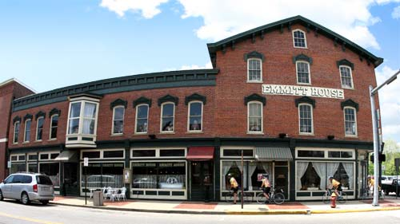
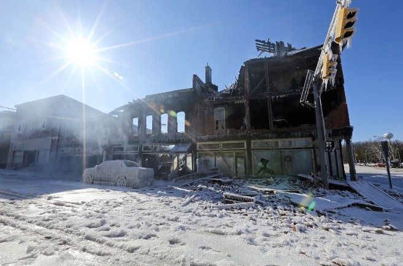
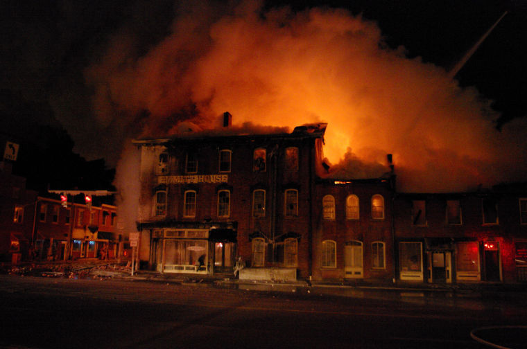
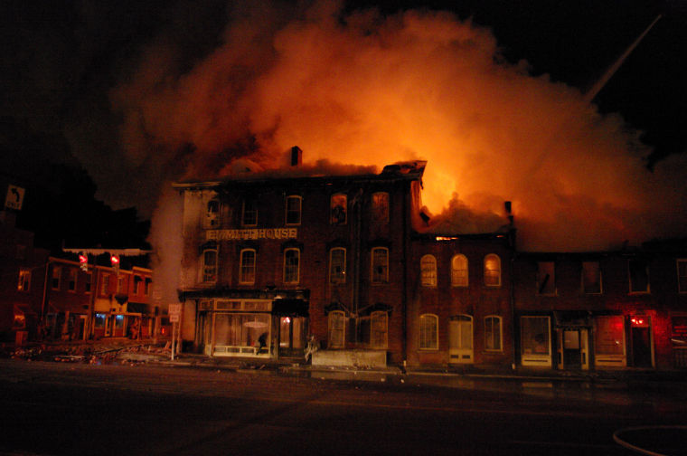
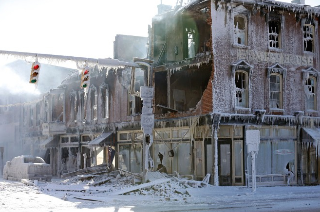
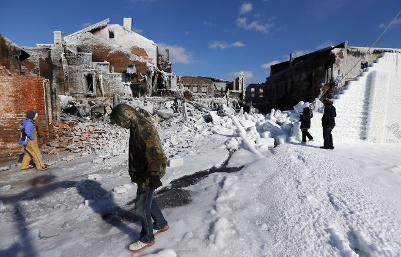
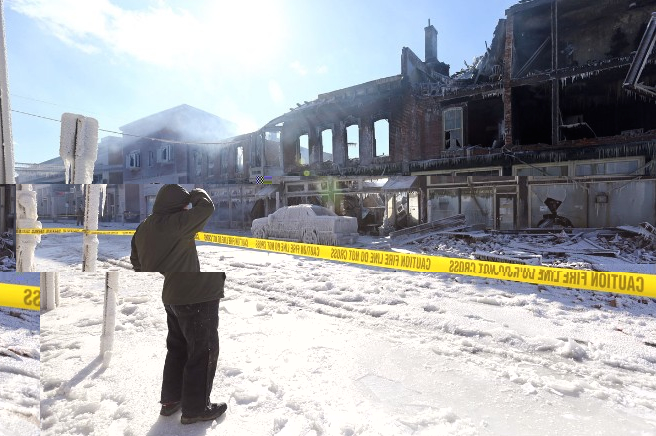
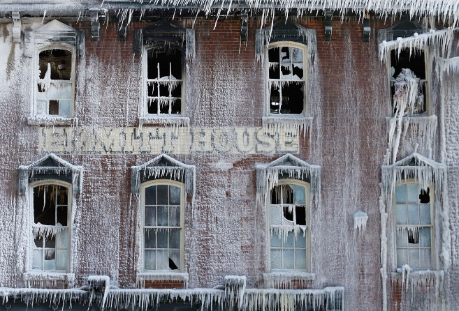

The Emmitt House


Standing on a corner along US 23 in Waverly, the Emmitt House looks every bit as historic and haunted as it is. They take their ghosts seriously there, too, even leaving a package of cigars out for the chief ghost--and chief figure in the history of the building--James E. Emmitt. His pipe smoke is the best-known of the ghostly manifestations which have plagued this restaurant and inn for a long time.
Emmitt was an entrepreneuer who became Pike County's first millionaire. His money was earned largely from a distillery which he used to make whiskey and "Emmitt's Discovery," a snake oil cure-all he "discovered" when a mule kicked a can of fuel oil into a vat of spirits. (What made him want to drink it is anyone's guess.) He served two terms in the US Senate and died in 1893, at the age of 87.
Emmitt used his influence to have the county seat moved to Waverly from Piketon, and also had the Ohio & Erie Canal route changed between the two towns. He then built the Emmitt House along the canal in 1861, even though railroads had displaced the canal by then. His hotel did a brisk business with travelling salesmen and other people who passed through.
For the rest of the building's history employees smelled James E. Emmitt's cigar smoke, and they sometimes saw a woman in an old-fashioned "granny apron" cleaning things when no one should have been there. Two ghostly children roamed the building, possibly members of the Harper family (nearly wiped out by smallpox while staying at the hotel). And basement workers often encountered the ghosts of slaves who may have died there en route on the Underground Railroad. They sometimes made loud noises or, more helpfully, changed the syrups on the soda fountain--which any bar employee can tell you is a gross job.
 

And then it was gone. It's sad to have to change the verb tenses in the previous paragraphs, but it's true: the Emmitt House is no more.


January 6, 2014, was one of the coldest days of an especially vicious winter. The temperature was well below zero when a fire erupted on the second floor of the Emmitt House. It spread rapidly. Everyone inside was evacuated in plenty of time, thanks in part to the quick action of a Pennsylvania firefighter who happened to be present. Before it was over more than sixty firefighters were called upon to combat the blaze in shifts.

The cold doubled the danger, both to neighbors and firefighters, by freezing the water from the hoses as it was pumped. By the morning of January 7, all that was left was a scorched husk, glazed with thick sheets of ice. Three months later the insurance investigation concluded that the fire was sparked by an 1100 Lenox Pulse gas furnace which became overheated combating the low temperatures. The owner indicated that investors had already inquired about purchasing the property. Will the ghosts stay with the spot, or did they disappear along with the Emmitt House itself? Time will tell.

Columbus Dispatch: "Emmitt House Fire"
Chillicothe Gazette: "Historic Emmitt House Destroyed by Fire"
WOSU: "Historic Emmitt House Destroyed in Fire"
Pike County Daily: "Insurance Investigation of Emmitt House Fire Concludes"
Back